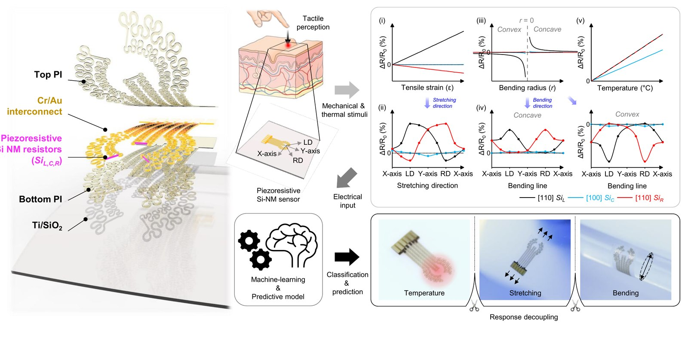
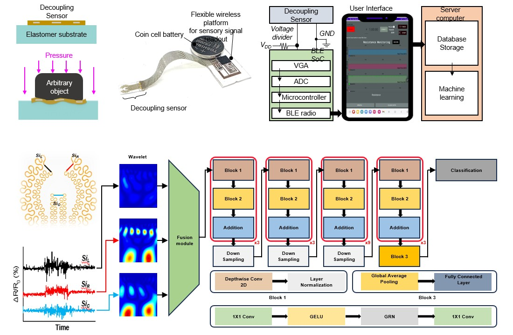
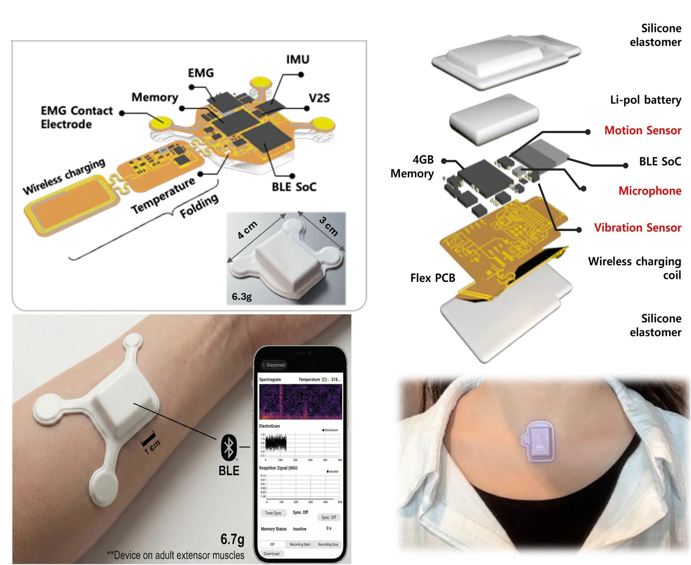
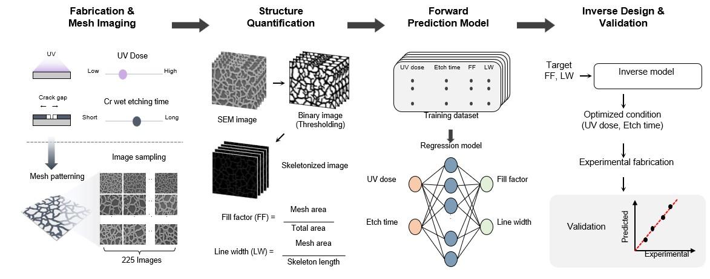
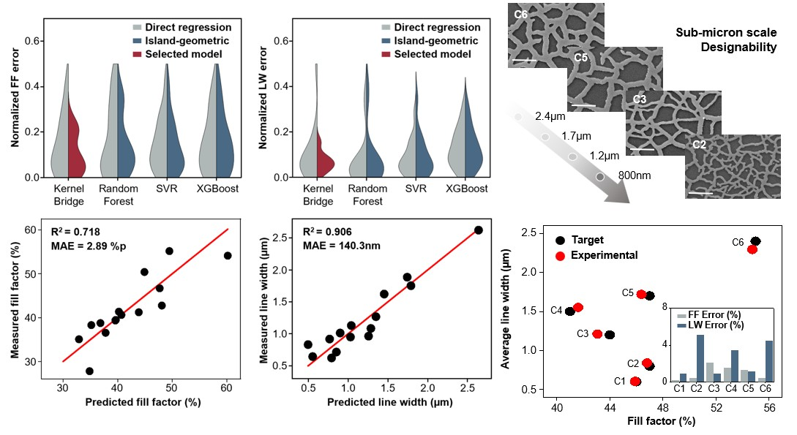

M.S. Student, Department of AI Systems Engineering
Sungkyunkwan University · Advisor: Prof. Sangmin Won (원상민 교수님)
저는 하드웨어 수준의 센서 신호 분리, 웨어러블 생체 신호 수집, 그리고 AI 기반 예측·최적화를 결합하여 지능형 멀티모달 센싱 시스템을 연구하고 있습니다. 촉각 인식용 스트레인·온도 복합 센서 플랫폼부터 파킨슨병·삼킴장애를 모니터링하는 웨어러블 디바이스, 반도체 공정 조건을 역설계하는 AI 모델까지 — 센서 하드웨어와 머신러닝을 잇는 연구를 진행하고 있습니다.
저는 성균관대학교 AI 시스템공학과 석사 과정생으로, 센서 하드웨어 설계부터 신호 처리, AI 모델링까지 아우르는 멀티모달 지능형 센싱 연구를 수행하고 있습니다. 컴퓨터공학을 전공하며 쌓은 소프트웨어·AI 역량을 바탕으로, 현재는 반도체 특성을 활용한 하드웨어 레벨 신호 분리 기술과 웨어러블 디바이스 기반 디지털 헬스케어 시스템 개발에 주력하고 있습니다.
연구 과정에서 센서 소자 제작, 임베디드 펌웨어(nRF/BLE) 및 모바일 애플리케이션 개발, 데이터 전처리와 AI 모델 설계를 직접 수행하며 하드웨어–신호처리–AI가 통합된 엔드투엔드 시스템을 구축하는 데 강점을 가지고 있습니다.
현재 진행 중인 연구는 크게 세 갈래입니다: 촉각 인식을 위한 멀티모달 센싱 플랫폼, 파킨슨병·삼킴장애 모니터링을 위한 웨어러블 디지털 헬스케어 시스템, 그리고 반도체 공정조건을 예측·역설계하는 AI 기반 공정 최적화 프레임워크입니다.
센서 하드웨어, 임베디드 시스템, AI 모델링을 아우르는 세 가지 핵심 연구입니다.

Hardware-level decoupling of tensile strain, bending, and temperature via piezoresistive Si-NM sensors, followed by AI-based classification.
Hardware-level Decoupling, Wireless System, and AI-based Recognition
논문 투고 후 revision 진행 중

Flexible wireless readout platform (BLE SoC) and a wavelet-fusion deep learning pipeline for multimodal signal classification.
Sensor → Firmware/BLE → Server → Machine Learning

Miniaturized wearable devices (6.3–6.7 g) integrating EMG, IMU, microphone, and vibration sensors with BLE connectivity.
Multimodal Biosensing, Wearable System, and AI-based Clinical Assessment
현재 파킨슨병 및 삼킴장애 환자 멀티모달 데이터 수집 진행 중 · 정량 feature 추출 및 예측·분류 모델 개발 중

Forward regression model (UV dose, etch time → fill factor, line width) and AI-based inverse process design with experimental validation.
Process Modeling, Inverse Prediction, and AI-based Optimization

Kernel Ridge regression selected as the final model; six AI-proposed process conditions (C1–C6) fabricated and validated against targets.
Forward model 기반 inverse search + experimental fabrication
게재가 확정되는 대로 서지 정보(저널/학회명, 권·호, DOI)를 업데이트할 예정입니다.
피에조저항형 Si 나노멤브레인 센서의 hardware-level decoupling과 웨이블릿 기반 딥러닝 분류를 결합해 스트레인·굽힘·온도 복합 자극에서 물체 인식 정확도를 72%에서 95.7%로 향상시킨 연구입니다.
소형 웨어러블 디바이스로 수집한 IMU·EMG·MMG 및 음성·진동 신호를 활용해 파킨슨병·삼킴장애 환자의 임상 상태를 정량적으로 평가하는 연구입니다. 현재 임상 데이터 수집 및 분석 모델 개발이 진행 중입니다.
225개 공정 데이터로 학습한 Kernel Ridge 회귀 모델을 기반으로 목표 Fill Factor·Line Width에 맞는 UV dose·Cr wet etching 조건을 역설계하고, 6개 신규 조건을 실험적으로 검증한 연구입니다.